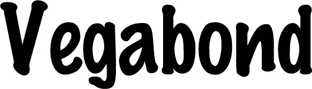

'Vegabond'란 한글로 번역하자면 '방랑자' 라는 뜻 이다.
방랑자는 나에게 큰 의미를 두는 단어이자 나를 표현하고
싶은 단어이다.
어딘가에 맞춰진 틀의 답답함을 느끼고, 압박을 느끼는
나는 혼자 무언가를 하는걸 좋아하고
그것에 희열도 느끼고 또한 그 과정에서 성취감도 느끼고
무엇보다 내가 남자로 태어났다면 이라는 전제하에
한 평생을 떠돌아 다니며 살고싶은 여자라는 존재는
한 없이 약한것이 아닐까 하며.
이 페이지를 만들었습니다. ^^